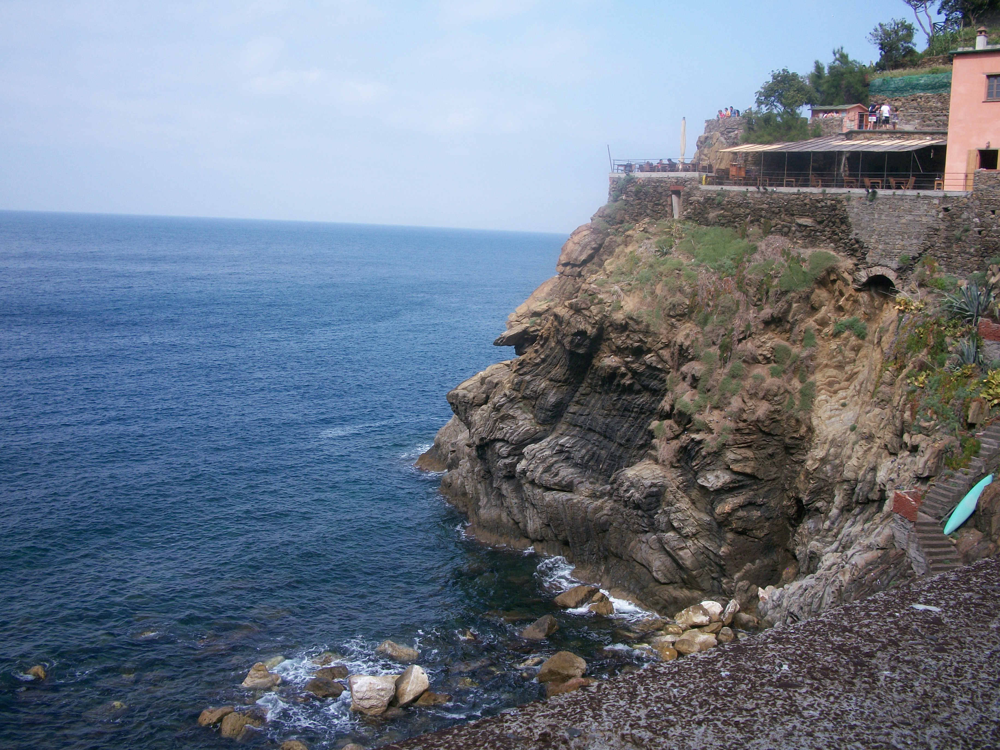

Cinque Terre

Basic Facts about The Five Cities:
The five cities within this region are...
Monterosso al Mare
Vernazza
Corniglia
Manarola
Riomaggiore
There are walking paths to navigate through them all, as well as trains and hiking trails. The various options of transportation allow visitors to either get from one place to another quickly and efficiently, or to take their time and enjoy the beautiful scenery.
Each home in these five cities is a different color, which just adds to the charm!
There is no question that these five cities provide a romantic atmosphere. The greatest attraction of this particular region is the perfect example!